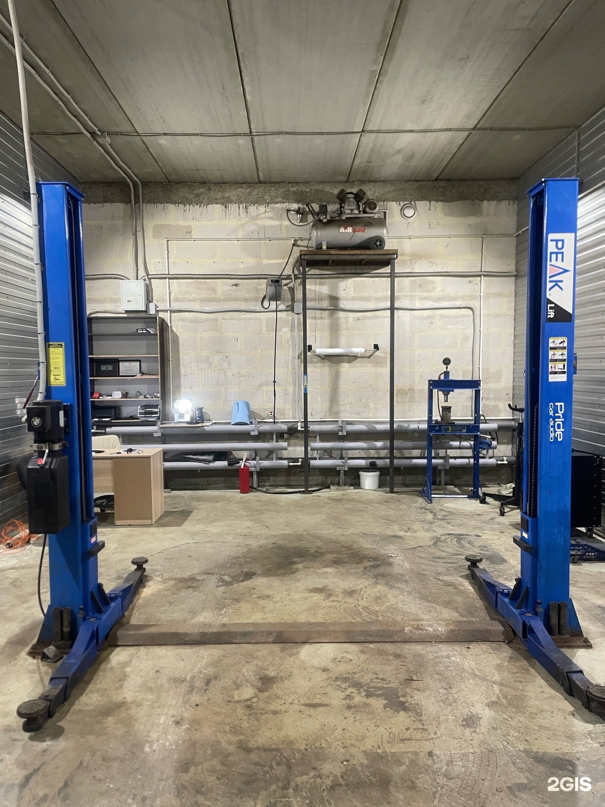
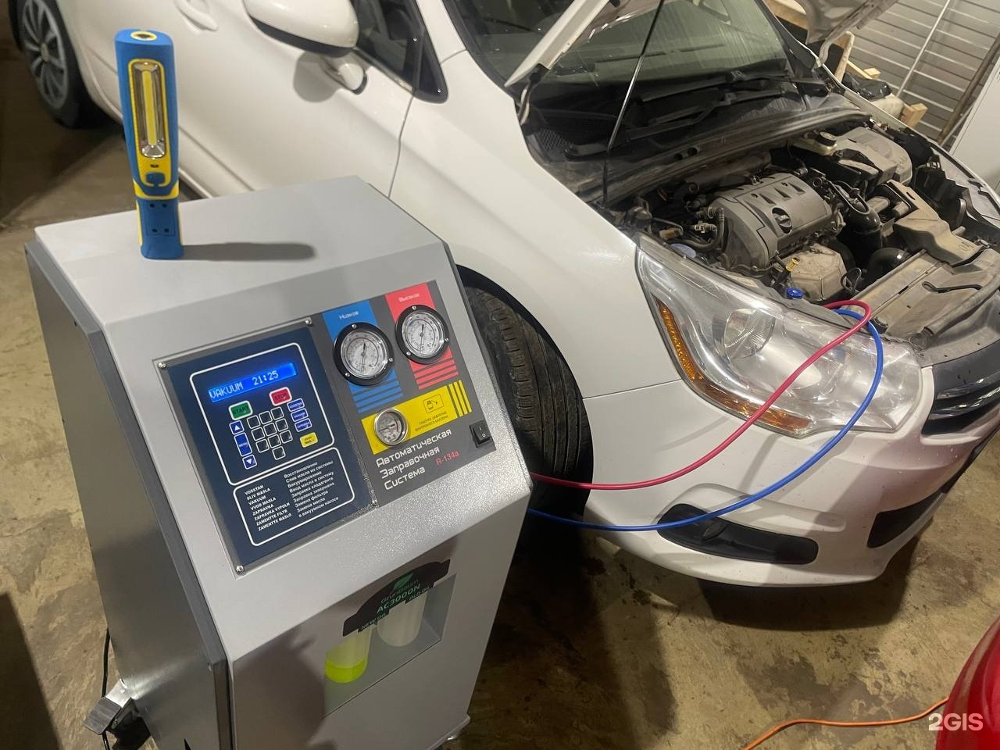
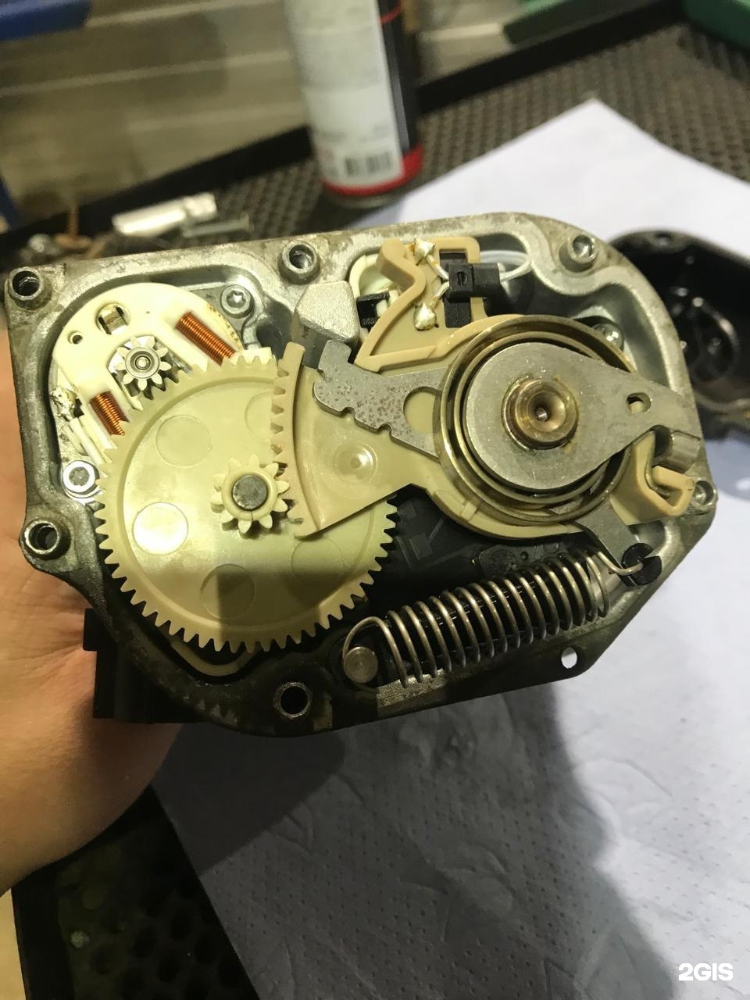
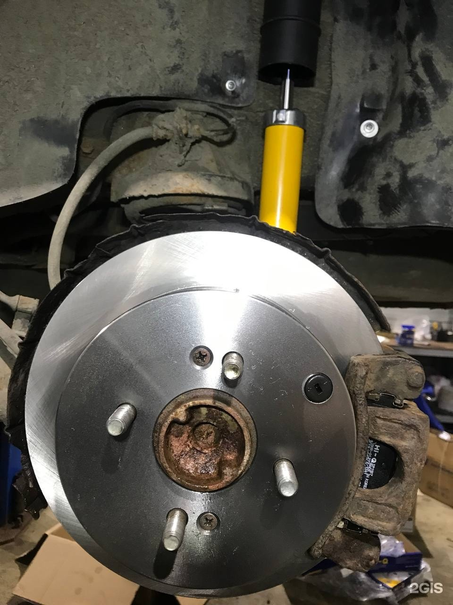

Центр
AutoMaks
Диагностика и ремонт вашего автомобиля
+7 (921) 703-93-90ТелефонХодовая часть, бензиновый двигатель, МКПП и автомобильная электроника. Уточните нужные работы по телефону.
Адрес
Псков, Иркутский переулок, 2Б, 2/104 офис; 2/104 помещение; 1 этаж
Часы работы
Пн–Вс 10:00–19:00; по предварительной записи: сб, вс
Демо-концепт · текущий прайс ещё не подтверждён
Направления
С чем можно обратиться
Ремонт ходовой части автомобиля
Уточняйте по телефонуОбслуживание автомобильных климатических систем
Уточняйте по телефонуКомпьютерная диагностика автомобилей
Уточняйте по телефонуРемонт МКПП
Уточняйте по телефонуРемонт бензиновых двигателей
Уточняйте по телефонуРемонт выхлопных систем
Уточняйте по телефонуРемонт электронных систем авто
Уточняйте по телефонуПрайс
Услуги и цены
Фотографии
Бокс и детали автомобиля
Фотографии из карточки бизнеса. Снимки не подтверждают актуальность цен.



Отзывы
Что отмечают посетители
В одном отзыве положительно оценили проверку двигателя и ходовой перед покупкой автомобиля.
Полный отзыв в 2ГИСДругой посетитель хвалит диагностику и понятное объяснение причины неисправности.
Полный отзыв в 2ГИСПересказ субъективных мнений без имён авторов. Полные отзывы — в 2ГИС.
Контакты
Адрес и связь
Часы работы
Пн–Вс 10:00–19:00; по предварительной записи: сб, вс
Телефон+7 (921) 703-93-90
Обсудите диагностику или ремонт по телефону
Позвонить